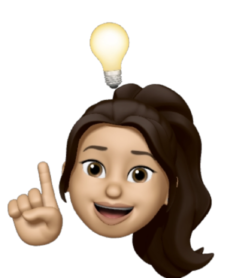

My Process

1. Research & Discovery
Understand user needs, business objectives and market context through thorough research and analysis.
2. Define
Translate research into actionable insights by synthesizing findings, prioritizing problems and outlining key user flows and requirements.
3. Design
Craft thoughtful, user-centered solutions through wireframes and prototypes, refining concepts in close collaboration with stakeholders and developers.

4. Develop
Work closely with development teams to bring designs to life, ensuring alignment, accessibility and consistency across platforms.